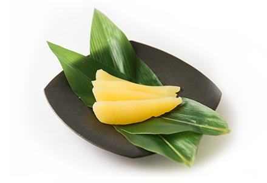
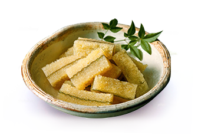
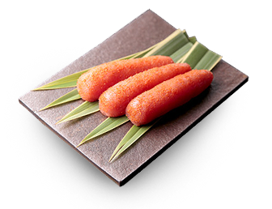

Products
商品のご紹介
数の子
凝縮された旨味と独特の甘味、確かな歯ざわり
ご贈答用にも最適な最高級品から、普段の食卓にもおすすめのお求めやすい商品まで、ご満足いただけるよう多彩なラインアップをご用意しております。

いくら ・すじこ
ぷりっとした粒の食感、噛むととろりとした旨味と甘み
鮮度にこだわったヤマニ独自の製法には、生臭みが出ないような工夫があり、いくら・すじこ本来の味が凝縮されています。
味付子持ち昆布
天然の子持ち昆布に、上品な白醤油で味付けした逸品
ニシンが昆布に卵を産みつけることでできる天然の子持ち昆布に、上品な白醤油で味付け。数の子がぎっしり詰まった、歯ごたえのある極上品です。

たらこ ・明太子
蓄積された知恵と経験、老舗ならではのよそでは真似できない味
ベテラン従業員が熟練の目と手で一つ一つ丁寧に選別した、色・形・大きさ、どれをとっても一級品のたらこ・明太子をご提供いたします。

IHARA Spirits
井原スピリッツ
Company
井原水産について

Information
お知らせ
| 2016/12/01 | 数の子といくらのセット 通常価格5,756円のところ4,300円で販売しております。 ※のし包装対応不可 |
| 2016/12/01 | 数の子といくらのセット 通常価格5,756円のところ4,300円で販売しております。 ※のし包装対応不可 |
| 2016/11/25 | 【完売御礼】干し数の子は、お陰様をもちまして完売致しました。 |
| 2016/10/03 | 高島屋 新宿店 大北海道展 11/3（木）～11/8（火）に出店いたします。 |
| 2016/09/25 | AIR DO機内誌『rapora 10月号』に「鰊の切込み（数の子入り）」が紹介されました。 |
| 2016/09/01 | 浜松遠鉄百貨店 秋の大北海道展 10/12（水）～10/24（月）に出店いたします。 |